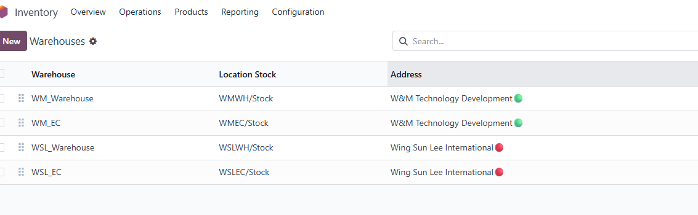
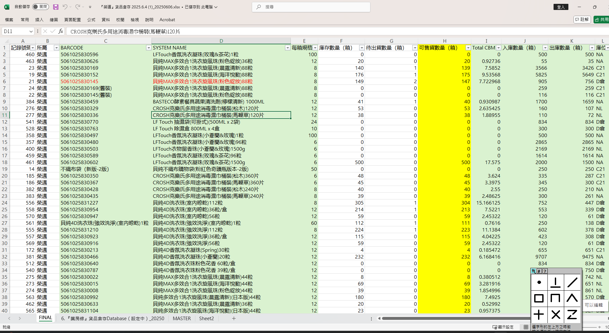

Odoo 中無法在 Quotation Template 中預先設定 Free Good，只能於建立報價單時手動點選。(這個不好意思 目前真的要自己剔)
CS 希望客戶 Statement 按送貨日期為主進行對帳，例如發票日期為 6 月，但如送貨為 7 月，則應納入 7 月。已更新系統加入 Delivery Date 。
處理匯入時若只靠中文名會錯配，建議 Excel 匯入時使用 barcode + product name 組合做 match。Excel 加入 formula 或兩欄 concat 處理，已提供 template 檔案 Odoo_PO_Import_Template_sample.xlsx。
WM
和 WSL 倉都設有
EC 倉，但 Sales
Team 的帳號被設定為不能看到該倉，Sales
Order 也不能選用該倉。

為回應老闆日常查看報表需要，已準備《Reports in Odoo 使用教學_202507.xlsx》，教學涵蓋不同報表工具（如 Pivot、List、Spreadsheet）在 Odoo 中操作方式。
部分產品雖 barcode 相同，但因應非原箱包裝數量不同，系統需分拆為多個產品。例如：49795660（原箱）、49795660非原箱(32支)、49795660非原箱(100支)。要求以相同格式整理 Excel，明確標示包裝數與倉別。發給Yeung再匯入
(包括商品與倉庫數量，使用現有格式（如圖中所示
Excel：包含
Barcode、System
Name、庫存量、可售數量等欄位），以利直接導入
Inventory。)

WMTD 預計 7 月 21 日正式使用 Odoo
應會包括 5月尾到7月中的差距 (18/7/2025星期五晚 7:00 pm)
新的 Customer
新的Product
Sales Order / Credit Note
點完倉,
最新倉數給yeung
匯入
(19/7/2025星期六
noon)
打單步驟,
改用 word
doc 文件教學
(一般/
加 集團,
用template
, free good 點用 ,
batch download invoice PDF, export excel SO, INV, How to Copy )
21/7 開始用
5月尾到7月中測試數據, 要全清掉
測試的 Customer
測試的Product
測試Quotation / Sales Order
測試Invoice / Delivery Note
測試PO
|
|
|
|
|
|
|
|
|
|
|
|
|
|
|
|